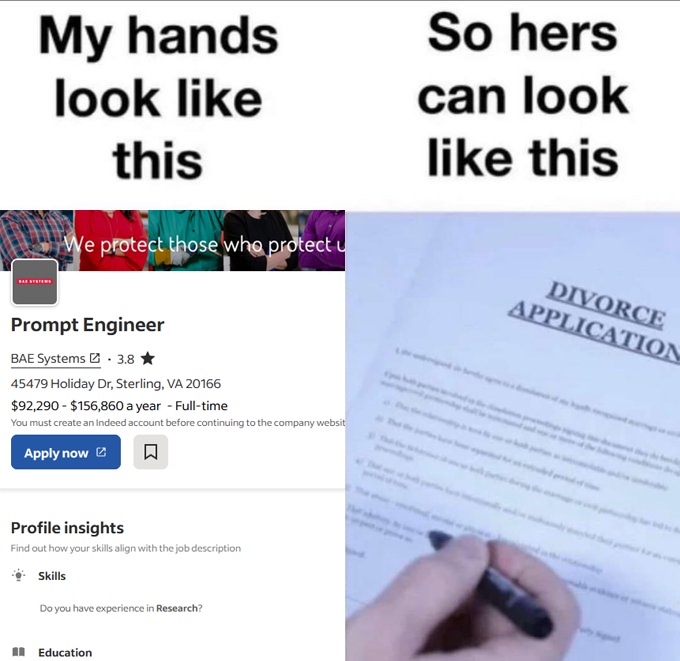
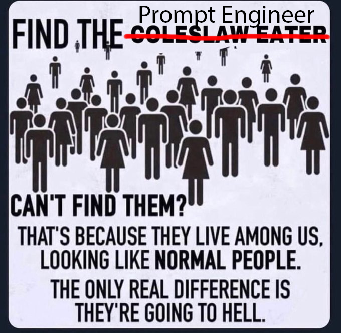

Well, well, well, here we are. We've come a long way, but clearly not all of us are equally skilled in the job market. I myself am not incredibly skilled at much, but "prompt engineers" clearly cant do anything by themselves.
As I'm trying to give "prompt engineers" credit for their job, I look at the job description and find out, you literally do nothing important for the future. You could be working on said AI models, whether it be training, IT, or programming, but nooooo, you decide to waste away in your dinky little brown stained office chair. It makes sense to do QA for any product, but you are below QA testers -- at least QA testers have a noteworthy job, and keep in mind, their job sounds like real work, unlike yourself.
Now I don't hate people, but AI bros need to stop creating job possitions -- because they clearly aren't real, and if you read any job description you will swiftly find out (besides this one of course, pop off bros, I support you). I hate to say it, but unfortunately for you, you will be sent straight to hell. I don't make the rules, nor can I say that I will miss "prompt engineers".

On to the next fake job, AI "Artists", you think your job is real, hmmm? How about I throw a tomahawk into your skull? No worries for you though, if the tomahawk does hit any one of your shriveled lobes nothing will change, as brain damage can't affect those who can't use their brains.
So called AI "Artists" are clearly not artists. You can be interested and test out AI, that's not the issue. You cannot call yourself an artist if you can't put in the effort: talking to a chatbot is not art. Even if you justify the work with your stupid undeveloped brain cortices with "But I edit the photo and regenerate parts that looked bad". Firstly, take care of your brain, it's clearly falling off the spine like some Texan baby back ribs. Secondly, why wouldn't you just get a real job, literally anything? Even photo editing/media editing with Photoshop and other tools is a respected career, but that would require work and your neurons clearly would implode if they had to actually function rather than prompt some AI from a startup that will crumble in 6 months.
You could even do journalism and make blogs (but you legally have to be worse at writing than me), that's easy as hell, plus, you don't have to do any research, in fact, you can spread misinformation all you want and that would still be a job, unlike your so called "prompt engineer".
(Me killing you were you stand because your take on AI could kill someone of pure stupidity)
Are you all just in day care and "prompt engineering" is a coverup? What do you actually do? Is their criteria for being a good "prompt engineer"?
When you really think about it, it almost sounds like workers are finally scamming employers by making up fake careers, just picture it:
- "Yeah, so basically I sit at a desk and allow a program to do the work for me."
- "I can't get fired because you can't measure the AI's output objectively. Here we let progammers take the fall."
- "Fullfillment in life? Who do you think we are, aerospace engineers?"
- "I am god, and in the AI world, you're the nerd!"
People are very valuable! which is why its such a shame that "prompt engineers" do practically nothing in the grand scheme of things. You could be actually contributing to AI research, and that would be awesome! I myself love research/academic jobs. But no, some company pays you to do ... I don't know... things? maybe? sometimes? Infact, do you guys actually go to work? Surely, remote "prompt engineer" isn't real, right? In what world is talking to an AI on your couch with netflix behind your computer a real thing.
What do you do with the AI after you're done training? The clear answer is to use the AI, but for what: souless stolen art? Do you want it to write articles, articles that have no soul? You are reducing human creativity to nothing but mere utility -- art is not just something that looks good, you can tell the effort in an artwork. Articles, wether you like reading or not, need to have some human voice as well.
Im sure you AI bros have already sucked the metaphorical hype teat before: first you uploaded your brain to the blockchain, then you bought some decentralized currency and lost your entire investment in one night. Now, here you are with your fake job, looking awfully drop-kickable, infact, I could fold you in half with one foul swoop and then who will you be praying to? Your million dollar employer?
There are so many other jobs that are less fake or at least sound less fake. You can command an AI model, so why don't you just work in management with real people? You could even work in HR: you literally make free money, HR is a scam. For God's sake, you could work for a DEI company and ruin AAA games, even that can be considered a more real job then your stupid future-pilled cope filled title of "prompt engineer". How about I engineer a portal to the deepest layer hell and land a diabolic sweep kick on you?
A friend of mine really also hates AI (for the most part) and has made the effort to learn art himself. This is wonderful because he is actually doing something. We were chatting about hatred of AI art, him more so than me. He brought up a subreddit r/MonsterGirls (though he realized his mistake, he was not fast enough to delete it), and it's such a surreal experience watching a NSFW subreddit fight over AI. Imagine disagreeing with gooners on the internet about not liking AI art invading their subreddit, then patting your self on the back by unironically saying "Hats off to the moderators of r/MonsterGirl - you are on the right side of history." (not to mention the cover image of this post has horrendous artistic errors, which may be there on purpose). I love this rabbit hole nonetheless.
Now, this friend of mine can think logically, and if he wants to enjoy an art space without AI, he should be able to. Infact, if he was still with us1, he'd probably join me in driving a skateboard straight into your sponge like brain.
1 My friend is alive and well, but AI will be the death of himIf I could go on about hating AI and "prompt engineering" -- which might just be reality's biggest troll, and I would never know -- I would. But unlike "prompt engineers", I don't have infinite free time, and I cant post on reddit all day defending slop-bucket art. I have real asperations in life, and again, unfortunately for you, only a higher power can save you from the idea of your job being an actual thing.
Now don't get me wrong, do what you want, but objectively, I think we can all see through the fake moniker of "prompt engineer" as a job.
And please, to all "prompt engineers" specifically, consider this hate speech, you job is fake. To all others consider this free speech, and have a wonderful day while we laugh at how stupid they sound. (also don't mind the fallacies, I didn't want to put effort into bulletproof logic)